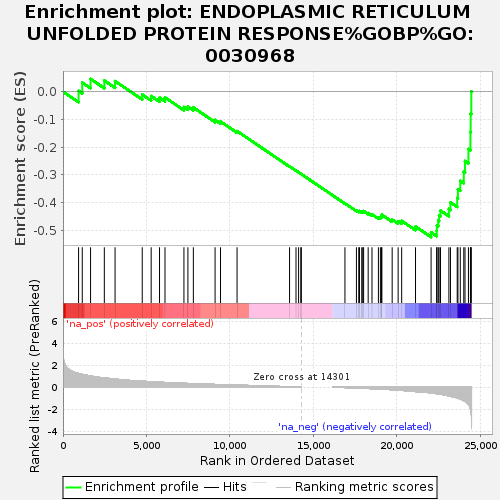
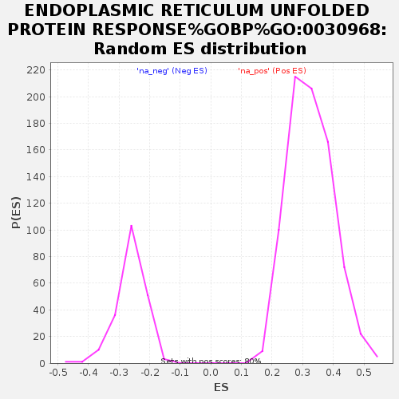

| Dataset | GvHD_A2_Ranks |
| Phenotype | NoPhenotypeAvailable |
| Upregulated in class | na_neg |
| GeneSet | ENDOPLASMIC RETICULUM UNFOLDED PROTEIN RESPONSE%GOBP%GO:0030968 |
| Enrichment Score (ES) | -0.525479 |
| Normalized Enrichment Score (NES) | -2.0035608 |
| Nominal p-value | 0.0 |
| FDR q-value | 0.03209768 |
| FWER p-Value | 0.4 |

| SYMBOL | RANK IN GENE LIST | RANK METRIC SCORE | RUNNING ES | CORE ENRICHMENT | |
|---|---|---|---|---|---|
| 1 | SERP2 | 934 | 1.241 | 0.0030 | No |
| 2 | RPAP2 | 1154 | 1.162 | 0.0327 | No |
| 3 | MBTPS2 | 1652 | 1.012 | 0.0460 | No |
| 4 | ATF6B | 2477 | 0.835 | 0.0401 | No |
| 5 | PARP6 | 3121 | 0.734 | 0.0381 | No |
| 6 | ERMP1 | 4750 | 0.542 | -0.0105 | No |
| 7 | MBTPS1 | 5285 | 0.493 | -0.0159 | No |
| 8 | AGR2 | 5786 | 0.447 | -0.0215 | No |
| 9 | ATF6 | 6113 | 0.424 | -0.0208 | No |
| 10 | RTCB | 7249 | 0.348 | -0.0556 | No |
| 11 | DNAJC10 | 7487 | 0.334 | -0.0542 | No |
| 12 | RNF7 | 7814 | 0.313 | -0.0572 | No |
| 13 | PTPN1 | 9116 | 0.244 | -0.1023 | No |
| 14 | EDEM2 | 9442 | 0.232 | -0.1079 | No |
| 15 | TMBIM4 | 10434 | 0.180 | -0.1425 | No |
| 16 | EIF2AK3 | 13581 | 0.034 | -0.2700 | No |
| 17 | QRICH1 | 13967 | 0.015 | -0.2853 | No |
| 18 | HSPA1A | 14122 | 0.008 | -0.2913 | No |
| 19 | ASB11 | 14254 | 0.002 | -0.2966 | No |
| 20 | PARP16 | 14287 | 0.001 | -0.2979 | No |
| 21 | CREB3 | 16900 | -0.035 | -0.4036 | No |
| 22 | CREB3L1 | 17589 | -0.073 | -0.4293 | No |
| 23 | YOD1 | 17729 | -0.082 | -0.4323 | No |
| 24 | EIF2S1 | 17772 | -0.084 | -0.4312 | No |
| 25 | CREBZF | 17907 | -0.093 | -0.4336 | No |
| 26 | PARP8 | 17969 | -0.097 | -0.4329 | No |
| 27 | TMTC4 | 18019 | -0.100 | -0.4315 | No |
| 28 | VAPB | 18293 | -0.119 | -0.4387 | No |
| 29 | ERN2 | 18522 | -0.136 | -0.4435 | No |
| 30 | RHBDD2 | 18906 | -0.162 | -0.4538 | No |
| 31 | ERN1 | 19026 | -0.169 | -0.4531 | No |
| 32 | WFS1 | 19094 | -0.174 | -0.4500 | No |
| 33 | CDK5RAP3 | 19113 | -0.176 | -0.4449 | No |
| 34 | EDEM3 | 19731 | -0.236 | -0.4623 | No |
| 35 | NFE2L2 | 20089 | -0.271 | -0.4679 | No |
| 36 | HERPUD2 | 20301 | -0.294 | -0.4668 | No |
| 37 | DERL1 | 21131 | -0.402 | -0.4873 | No |
| 38 | ATF4 | 22064 | -0.521 | -0.5082 | Yes |
| 39 | TBL2 | 22401 | -0.593 | -0.5022 | Yes |
| 40 | AMFR | 22412 | -0.595 | -0.4828 | Yes |
| 41 | DERL2 | 22493 | -0.610 | -0.4658 | Yes |
| 42 | SIRT1 | 22543 | -0.619 | -0.4473 | Yes |
| 43 | VCP | 22628 | -0.637 | -0.4295 | Yes |
| 44 | XBP1 | 23131 | -0.792 | -0.4237 | Yes |
| 45 | MANF | 23226 | -0.827 | -0.4001 | Yes |
| 46 | DDIT3 | 23630 | -0.980 | -0.3840 | Yes |
| 47 | DERL3 | 23673 | -1.000 | -0.3525 | Yes |
| 48 | CTH | 23815 | -1.084 | -0.3222 | Yes |
| 49 | SERP1 | 24024 | -1.231 | -0.2898 | Yes |
| 50 | SELENOS | 24097 | -1.268 | -0.2506 | Yes |
| 51 | ZBTB8OS | 24304 | -1.566 | -0.2070 | Yes |
| 52 | HERPUD1 | 24423 | -1.962 | -0.1466 | Yes |
| 53 | BHLHA15 | 24437 | -2.028 | -0.0797 | Yes |
| 54 | HSPA5 | 24475 | -2.463 | 0.0007 | Yes |
